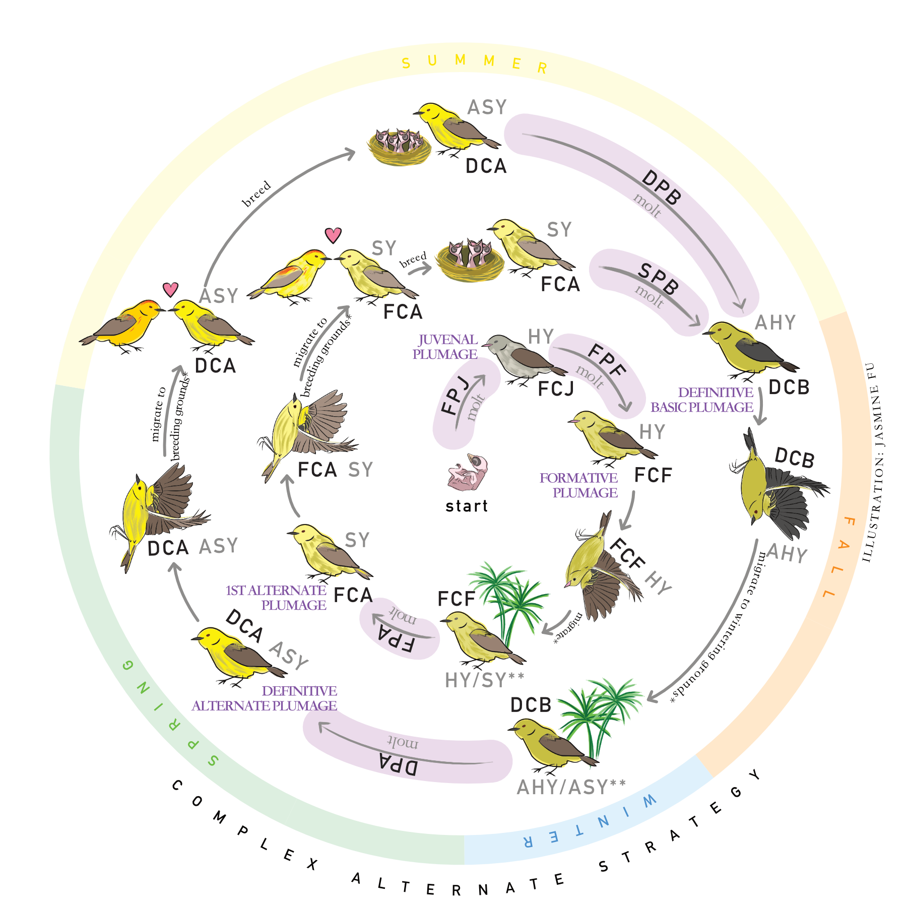

Complex Basic Strategy
(no breeding plumage in Spring) 
Complex Alternate Strategy
(molts into breeding plumage in Spring)
Click on the diagram to learn about each part of the cycle.Notes by the illustrator The molt arrows are more responsive if you click on them at the ends. The illustration's length of seasons are not proportionate to actual time. *Migration Some individuals may molt before, during or after migration. Some individuals may not migrate. Consult the Pyle guide for more information on molt timing. **Calendar Ages Hatch Year (HY) birds turn into Second Year (SY) birds on January 1st. After Hatch Year (AHY) birds turn into After Second Year (ASY) birds on January 1st. All birds in photos on this site were taken with proper US Federal bird banding permits. Use the slider to molt!0Click on each button to learn about extents of molt.The highlighted feathers are replaced in the corresponding molts.
LimitedIn a limited molt, some body feathers, lesser coverts, and maybe some median coverts are replaced.Some buntings/cardinals have a auxiliary preformative molt (FPX), in which some body feathers, median coverts and lesser coverts are replaced. This is a separate molt from the preformative molt (PF). In the picture below, the median coverts are fresh while the greater coverts are retained and juvenile. PartialIn a partial molt, all body feathers and lesser coverts are replaced. Some to all median and greater coverts are replaced. The alula covert (A1), carpal covert, tertials and center rectrices may be replaced. Exact extent of partial molt depends on species. Please consult the Pyle guide. In the picture below, the Eastern Phoebe has replaced all greater coverts except the 3 outer ones, creating a molt limit. IncompleteIn an incomplete molt, flight feathers on the wing are replaced. Incomplete molts can be eccentric or typical. In an eccentric molt, innermost secondaries and outermost primaries are replaced. In a typical molt, innermost primaries and outermost secondaries are replaced. In the picture below, the Carolina Wren has replaced some outer primaries and inner secondaries as evident from bar density, creating a molt limit. CompleteAll feathers are replaced.After a complete molt, first-cycle birds exhibit no plumage differences from definitive-cycle birds. Depending on the species, it is possible that first-cycle birds may retain juvenile underwing coverts. Typically, prebasic molts (PB) are complete and follow a predictable pattern. Hover to discover the wing feathers! |